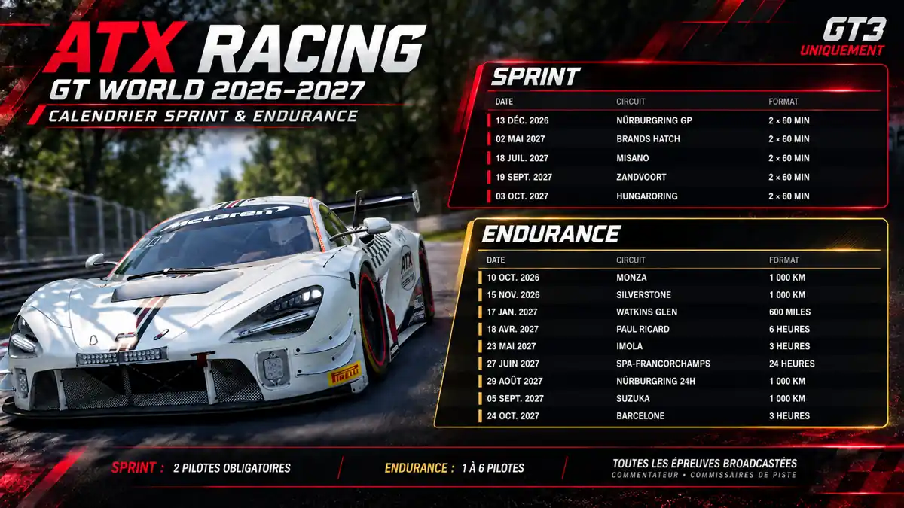

Deux pilotes par équipe · un arrêt obligatoire, stands ouverts toute la course · changement de pilote obligatoire · stint maximum de 35 min par pilote · pneus et carburant facultatifs.
ATX RACING · WGT
ATXRACING - WGT - Saison 1
WorldGT est le championnat GT3 d’ATX Racing, inspiré du programme officiel des compétitions GT3, mais adapté aux circuits disponibles sur Assetto Corsa Competizione et aux formats retenus par notre ligue. Les manches « Sprint » et « Endurance » composent une seule saison, avec un calendrier, des résultats et un classement communs.

Barème des points
P150pts
P236pts
P330pts
P424pts
P520pts
P616pts
P712pts
P88pts
P94pts
P102pts
Meilleur tour+2 pts
De 1 à 6 pilotes par équipe · durée selon l’épreuve · stint maximum de 45 min par pilote · stratégie de carburant et de pneus libre.
Sprint et Endurance composent un calendrier, des résultats et un classement communs.
WGT · PROGRAMME
Calendrier WorldGT
Chargement des prochains événements…
WGT · RÉSULTATS
Classement WorldGT
Chargement du championnat…
| # | Équipe | Points | Manches | Victoires | Podiums | Sprint | Endurance | Meilleurs tours |
|---|
Manches
Historique du championnat
ATX // WORLDGT · DRIVER PERFORMANCE
Points des pilotes
Rookie · 106%+Pro · 104–105.99%Elite · 102–103.99%Alien · 100–101.99%
Chargement…
| # | Pilote | Points | Courses | Victoires | Podiums | Rythme et progression | SAFE |
|---|